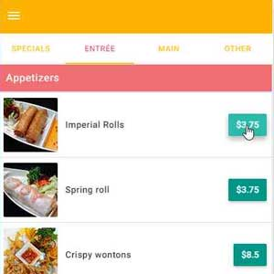
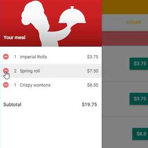

Apr. 2016
To further accomodate restaurant customers, I begun the development of an online food ordering web application using AngularJS. I was able to complete a working version of the front-end interface before returning to school.
The app connects to a database to retrieve all orderable menu items and displays them in the appropriate tab (Specials, Entrée, Main, Other). Each menu item has a clickable price tag from which customers can add an item to their meal. This functionality is missing only from two of the "Specials" items where customers must piece together their meal pieces before adding it to the meal.
The customer's meal can be viewed on the lefthand side in the form of a collapsible sidebar on mobile and a fixed sidebar on larger displays. There they can remove items as they see fit as well as check the total cost of their meal.
This app can easily be set up for another restaurant, so expanding this product to other restaurants is a possibility. If necessary, a native mobile app can be created as well to further enhance the customer experience.
